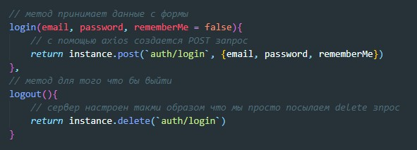

В двух словах что происходит при логинизации. Мы отправляем на сервер данные пользователя как правило это логин и пароль (в качестве логина у нас будет адрес электронной почты). Сервер обрабатывает присланные данные и зашивает в cookie идентификатор. Значит что бы залогинится с нашей старницы нам надо создать POST запрос и передать в качестве тела запроса данные с формы. Начнем с того что создадим метод в REST API
Теперь нужно создать thunk которая будет делать запросы на сервер и диспатчить результат ответа